WP Timeline
Responsive Vertical and horizontal timeline plugin
- Created: 27/08/2016
- Latest update: 27/08/2016
- By: ExThemes
- Email: exthemes.net@gmail.com
Thank you for purchasing my plugin. If you have any questions that are beyond the scope of this help file, please feel free to email via my user page contact form here. Thanks so much!
Introduction
WP Timeline is a Wordpress plugin that helps you create and show a beautiful timeline, history, stories easily. By this timeline plugin you can display any posttype and Display timeline anywhere via shortcodes.
Features list
- 40+ Animations support
- Fully responsive and mobile ready.
- Unlimited Timeline anywhere.
- Unlimited Timeline Color. You can set color for all or each timeline
- Support category, tag, custom post type, custom taxonomy
- Vertical and horizontal support
- Classic and modern style support
- Flat style include
- Timeline with single column support
- Beautiful Single timeline
- Ajax load more post
- History bar support
- Timeline with icon support
- Show media (video & audio) on timeline
- Quick Edit and option to order timeline support
- Unlimited customize with font, color
- Visual Composer support
- Supper easy configuration
- And more …
Installation
The Full Package includes these following files and folders:
- Documentation folder - Contain this document
- Installation Files folder - Contain installable file plugin
- wp-timeline.zip folder - WordPress Plugin Installation file
Install via Wordpress admin
- Login to WordPress Admin
- In the left menu panel go to Plugins > Add New > Upload to install plugin
- Click Upload
- Browse your download package to select installation files
- Click Install Now button
- Once it's uploaded, click the Activate link
Install via FTP Account
- Use your FTP software to browse to wp-content/plugins folder to install plugin
- Extract the installation files to their corresponding folders, for example wp-timeline.zip to wp-timeline and upload to server
- Once it's uploaded, go to your WordPress Admin, browse to Plugins > Installed Plugins
- Click the Activate link
Update
- Deactive "WP Timeline" plugin by going to Plugins > Deactive "WP Timeline" plugin
- Delete older version by clicking on Delete link. Confirm to delete.
- Update and re-install new version.
Install Sample Data
Creating Timeline
1. Go To Wordpress Admin > Timeline > Add New Timeline
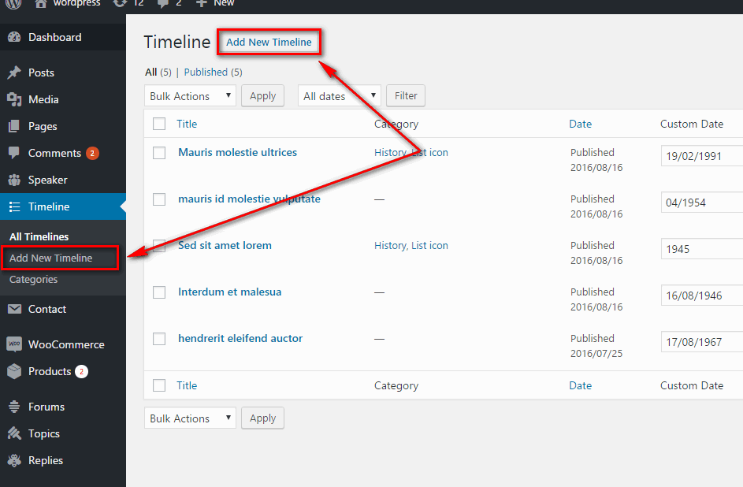2. Set a title, description, featured image and required field of the timeline
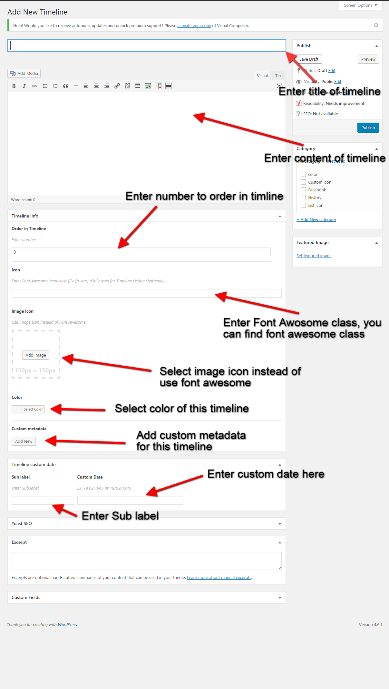3. Date and info of timeline settings
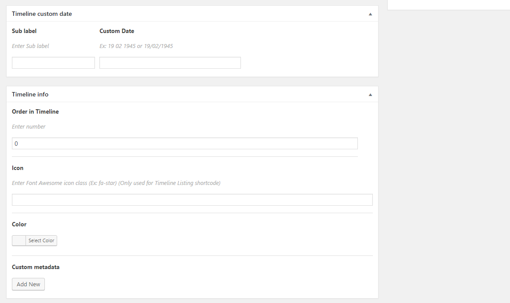4. Display
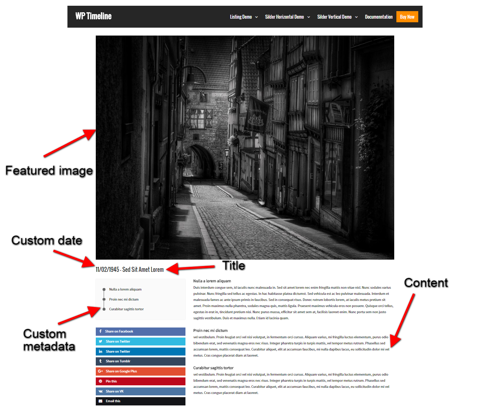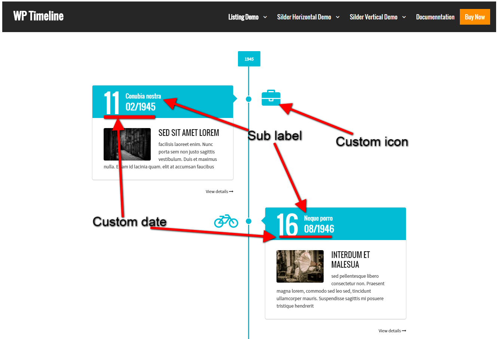
How to create Timeline with video or audio?
1. Add youtube or soundcloud link to content of timeline, you could also use embed of any video or audio website
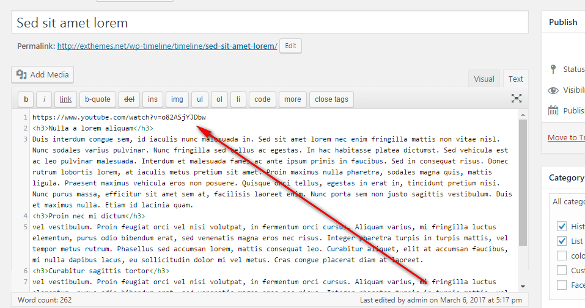2. To show video or audio in timeline, you just select Show media > yes
If you dont use Visual Composer, you just add this parameter to timeline shortcode: show_media="1"
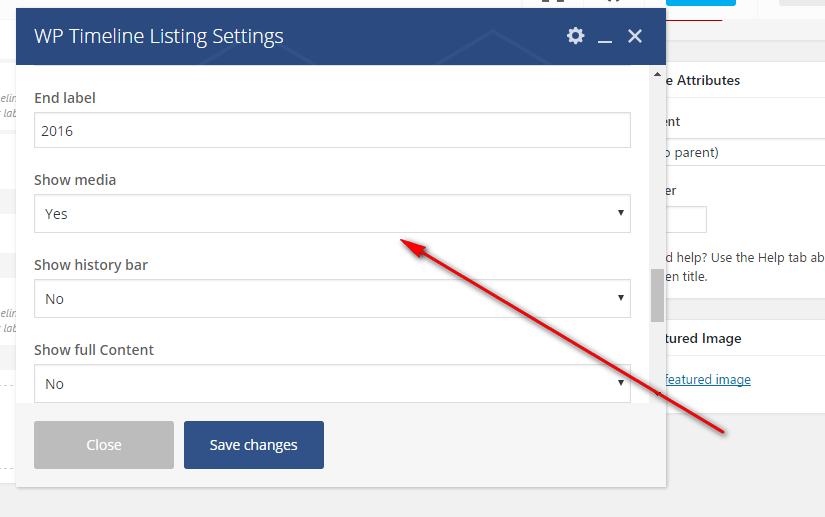Custom order Timeline
1. Go To Wordpress Admin > Timeline > Add numerical order ( just type number )
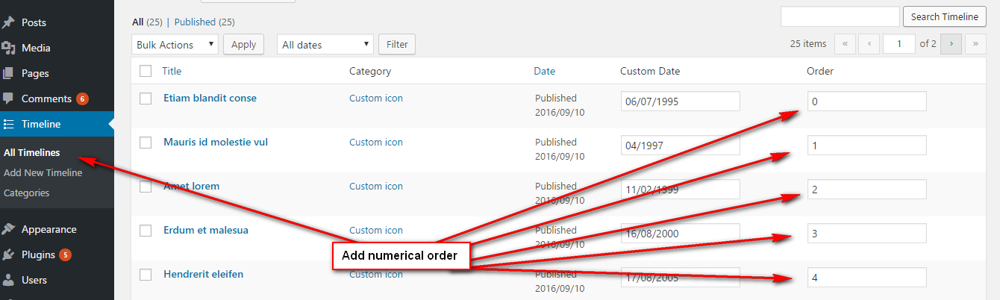2. Set a timeline order by custom custom order
If you dont use Visual Composer, you just add this parameter to timeline shortcode: order="ASC" orderby="meta_value_num" meta_key="wpex_order"
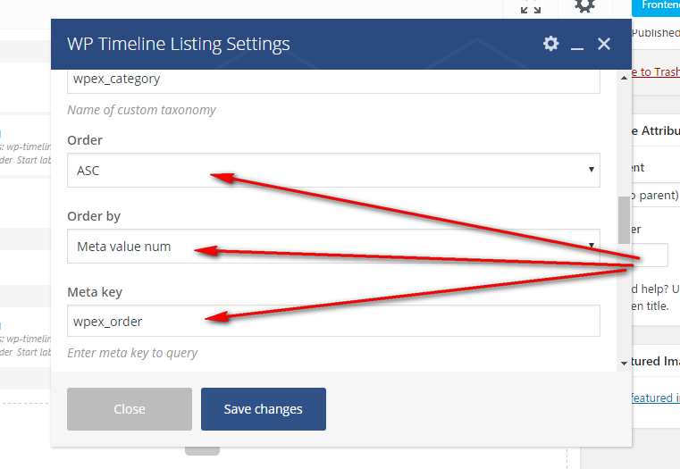Shortcode
Timeline listing
Timeline listing is a shortcode for displaying timeline on listing with load more ajax.
[wpex_timeline style="" alignment="" posttype="wp-timeline" count="" posts_per_page="" ids="" cat="" tag="" taxonomy="" order="" orderby="" meta_key="" start_label="" end_label="" show_media="" lightbox="" feature_label="" animations="" class=""]
- style - Select between Classic (style="classic") or Modern (style="modern")
- alignment - Select between Center (alignment="center") or Left (alignment="left")
- posttype - Select post types, Ex: posttype="post" to show blog posts in timeline ( Defaults: wp-timeline)
- ids - List of IDs to query, separated by a comma
- count - Total number of items to show. Default 9
- posts_per_page - Number of items per page. Default 3
- cat - List of category ids (or slug), separated by a comma
- tag - List of tag ids (or slug), separated by a comma
- order - Order ascending (order="ASC") or descending (order="DESC")
- taxonomy - Enter slug of custom taxonomy
- start_label - Enter start title of timeline
- end_label - Enter end title of timeline
- orderby - Choose order condition
- 'date' - Order by date.
- 'ID' - Order by post id. Note the captialization.
- 'author' - Order by author.
- 'title' - Order by title.
- 'name' - Order by post name (post slug).
- 'name' - Order by post name (post slug).
- 'modified' - Order by last modified date.
- 'parent' - Order by post/page parent id.
- 'rand' - Random order.
- 'menu_order' - Order by Page Order. Used most often for Pages (Order field in the Edit Page Attributes box) and for Attachments (the integer fields in the Insert / Upload Media Gallery dialog), but could be used for any post type with distinct 'menu_order' values (they all default to 0).
- 'meta_value' - Note that a 'meta_key=keyname' must also be present in the query. Note also that the sorting will be alphabetical which is fine for strings (i.e. words), but can be unexpected for numbers (e.g. 1, 3, 34, 4, 56, 6, etc, rather than 1, 3, 4, 6, 34, 56 as you might naturally expect). Use 'meta_value_num' instead for numeric values.
- 'meta_value_num' - Order by numeric meta value (available with Version 2.8). Also note that a 'meta_key=keyname' must also be present in the query. This value allows for numerical sorting as noted above in 'meta_value'.
- 'post__in' - Preserve post ID order given in the ids array
- 'none' - No order
- meta_key - Enter custom field key, Show posts associated with a certain custom field
- show_media - Choose "Yes" (show_media="1") or "No" (show_media="0") to show or hide Media instead of thumbnail
- show_history - Choose "Yes" (show_history="1") or "No" (show_history="0") to show or hide history bar
- filter_cat - Choose "Yes" (filter_cat="1") or "No" (filter_cat="0") to show or hide filter category bar
- lightbox - Choose "Yes" (lightbox="1") or "No" (lightbox="0") to enable or disable image lightbox feature
- animations - Choose animations for each timeline
- None
- bounce
- flash
- pulse
- rubberBand
- shake
- headShake
- swing
- tada
- wobble
- jello
- bounceIn
- bounceInDown
- bounceInLeft
- bounceInRight
- bounceInUp
- fadeIn
- fadeInDown
- fadeInDownBig
- fadeInLeft
- fadeInLeftBig
- fadeInRight
- fadeInRightBig
- fadeInUp
- fadeInUpBig
- flipInX
- flipInY
- lightSpeedIn
- rotateIn
- rotateInDownLeft
- rotateInDownRight
- rotateInUpLeft
- rotateInUpRight
- bounceInRight
- rollIn
- zoomIn
- zoomInDown
- zoomInLeft
- zoomInRight
- zoomInUp
- slideIn
- slideInDown
- slideInLeft
- slideInRight
- bounceInRight
- class - Add a class name and refer to it in custom CSS
- feature_label - Choose "Yes" (feature_label="1") or "No" (feature_label="0") to show or hide feature label
Create feature label:
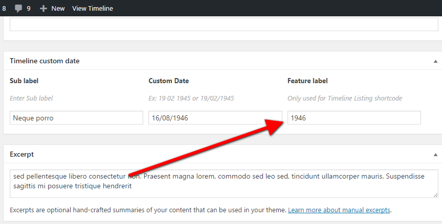Show feature label:
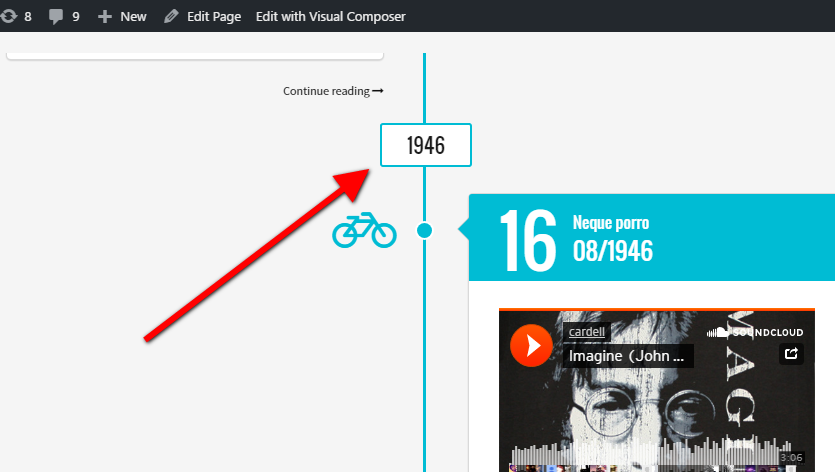
To use Dark style, you just add parameter class="dark-style"
Modern alignment center style
[wpex_timeline style="modern" alignment="center"]

Classic alignment center style
[wpex_timeline style="classic" alignment="center"]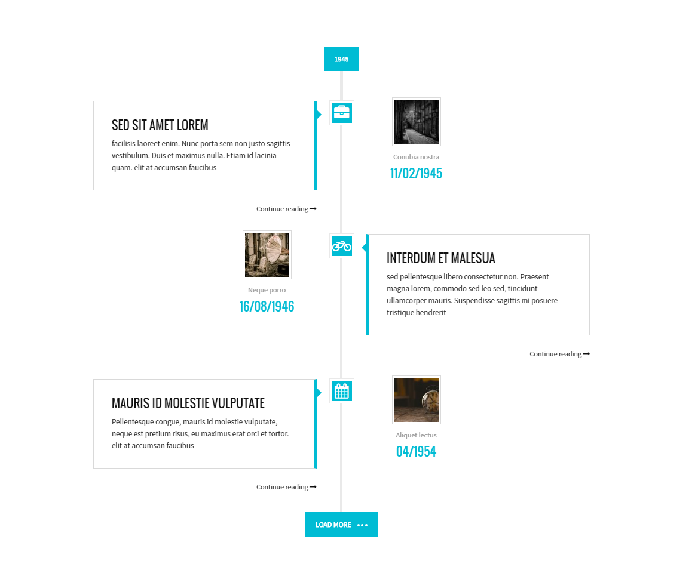
Modern single column
[wpex_timeline style="modern" alignment="left"]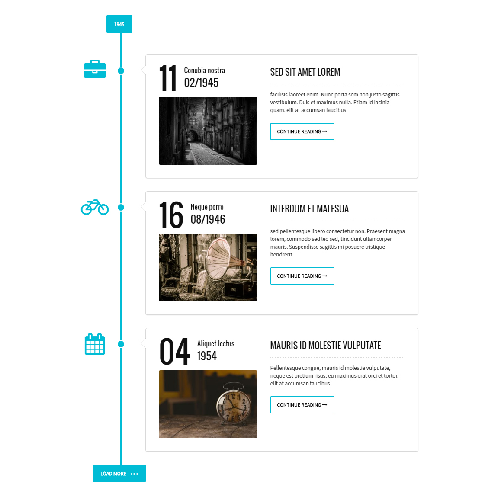
classic single column
[wpex_timeline style="classic" alignment="left"]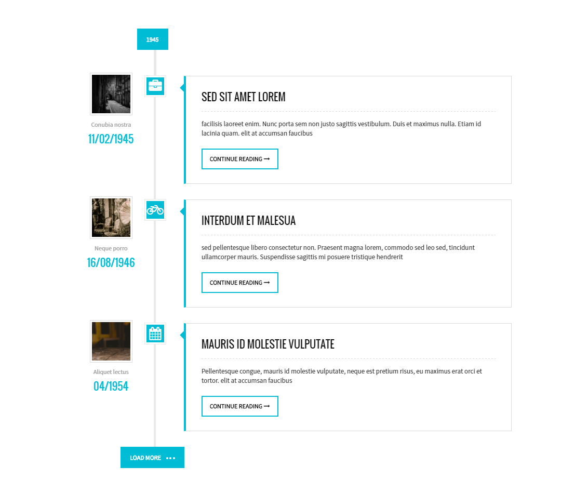
Timeline Slider
Timeline Slider is a shortcode for displaying timeline on horizontal Slider.
[wpex_timeline_slider style="" layout="" posttype="" count="" ids="" cat="" tag="" order="" orderby="" meta_key="" arrow_position="" taxonomy="" autoplay="" show_media="" class="" show_all="" toolbar_position=""]
- style - Select between Left side (style="left-side") or Full Width (style="full-width")
- layout - Select between Horizontal (layout="horizontal") or Horizontal Steps (layout="hozsteps")
- posttype - Select post types Ex: posttype="post" to show blog posts in timeline ( Defaults: wp-timeline)
- ids - List of IDs to query, separated by a comma
- count - Total number of items to show. Default 9
- cat - List of category ids (or slug), separated by a comma
- tag - List of tag ids (or slug), separated by a comma
- order - Order ascending (order="ASC") or descending (order="DESC")
- taxonomy - Enter slug of custom taxonomy
- orderby - Choose order condition
- 'date' - Order by date.
- 'ID' - Order by post id. Note the captialization.
- 'author' - Order by author.
- 'title' - Order by title.
- 'name' - Order by post name (post slug).
- 'name' - Order by post name (post slug).
- 'modified' - Order by last modified date.
- 'parent' - Order by post/page parent id.
- 'rand' - Random order.
- 'menu_order' - Order by Page Order. Used most often for Pages (Order field in the Edit Page Attributes box) and for Attachments (the integer fields in the Insert / Upload Media Gallery dialog), but could be used for any post type with distinct 'menu_order' values (they all default to 0).
- 'meta_value' - Note that a 'meta_key=keyname' must also be present in the query. Note also that the sorting will be alphabetical which is fine for strings (i.e. words), but can be unexpected for numbers (e.g. 1, 3, 34, 4, 56, 6, etc, rather than 1, 3, 4, 6, 34, 56 as you might naturally expect). Use 'meta_value_num' instead for numeric values.
- 'meta_value_num' - Order by numeric meta value (available with Version 2.8). Also note that a 'meta_key=keyname' must also be present in the query. This value allows for numerical sorting as noted above in 'meta_value'.
- 'post__in' - Preserve post ID order given in the ids array
- 'none' - No order
- meta_key - Enter custom field key, Show posts associated with a certain custom field
- arrow_position - Select position of arrow (top or center)
- show_media - 1/0 Choose "Yes" (show_media="1") or "No" (show_media="0") to show or hide Media instead of thumbnail
- full_content - 1/0 Choose "Yes" (full_content="1") or "No" (full_content="0") to show full content instead of excerpt
- hide_thumb - 1/0 Choose "Yes" (hide_thumb="1") or "No" (hide_thumb="0") to show or hide thumbnail
- show_all - 1/0 (show_all="1") Show all items on timeline bar
- toolbar_position - top (toolbar_position="top")/bottom (toolbar_position="bottom"), Choose Timeline bar position
- autoplay - 1/0 Choose "Yes" (autoplay="1") to auto next timeline
- strart_on - Slide to start on, enter number, default strart_on="0"
- class - Add a class name and refer to it in custom CSS
Horizontal Full width
[wpex_timeline_slider style="full-width"]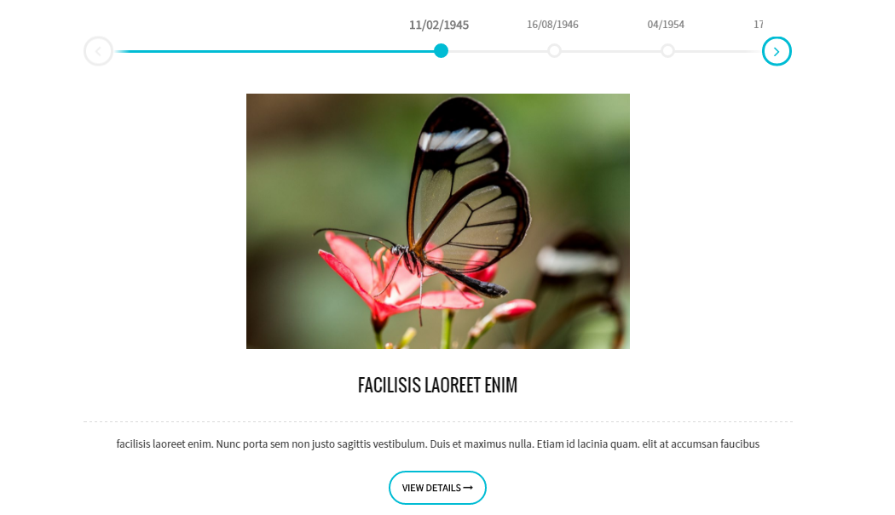
Dark style
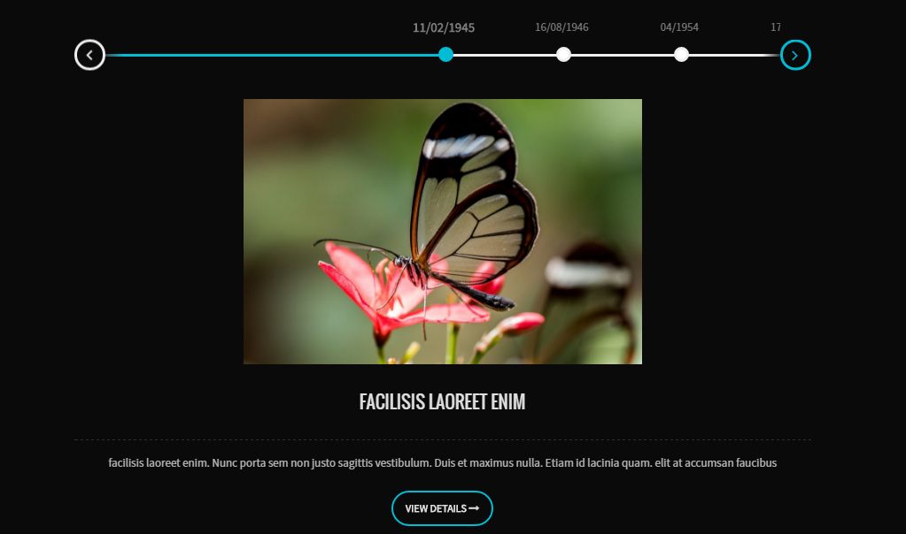Horizontal left
[wpex_timeline_slider style="left-side"]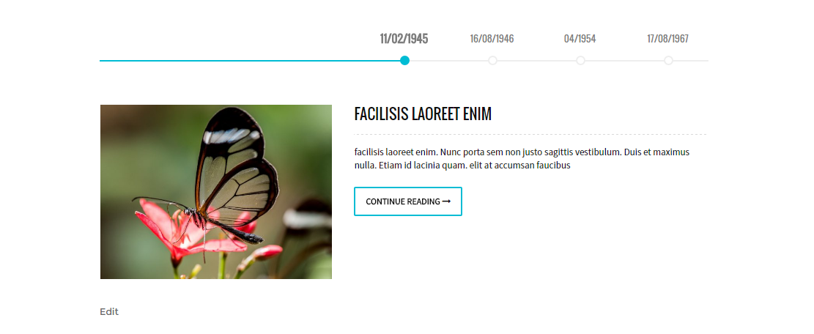
Horizontal Steps layout
[wpex_timeline_slider layout="hozsteps"]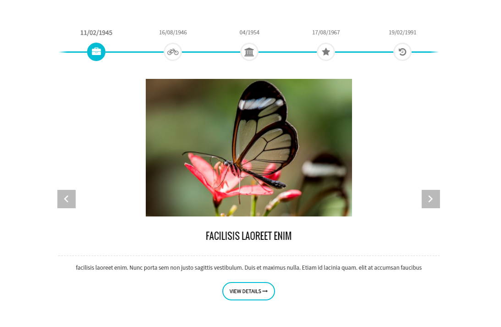 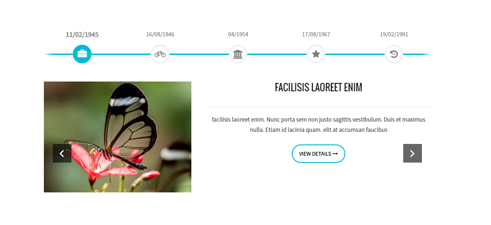
Dark style
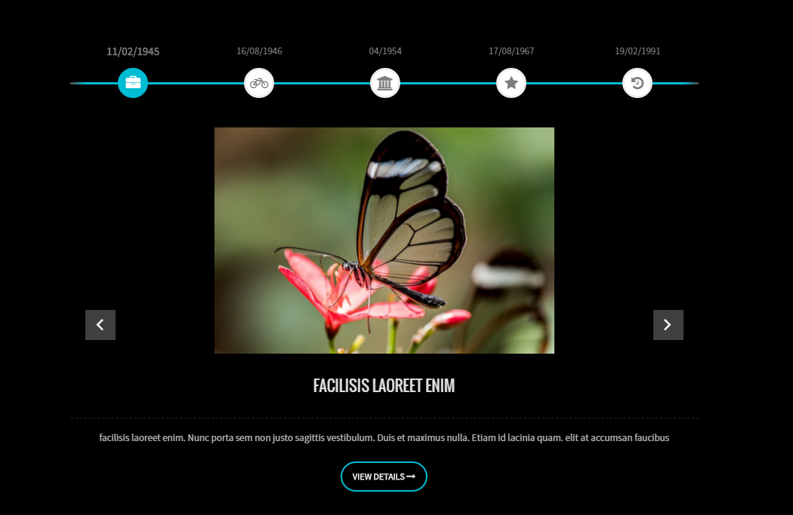 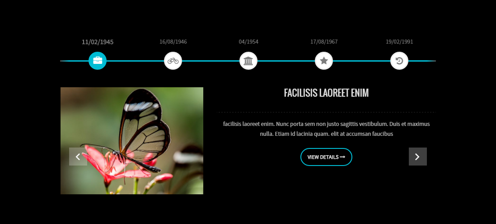To use Dark style, you just add parameter class="dark-style"
Timeline Horizontal multi items
Timeline Horizontal multi items is a shortcode for displaying multi items timeline on slider.
[timeline_horizontal_multi style="" posttype="" count="" slidesshow="" ids="" cat="" tag="" order="" orderby="" meta_key="" taxonomy="" autoplay="" show_media="" show_label="" full_content="" hide_thumb="" class="" show_label="" autoplayspeed="" strart_on="" number_excerpt=""]
- style - Select between style 1 (style="1") or style 2 (style="2") or style 3 (style="3") or style 4 (style="4")
- posttype - Select post types Ex: posttype="post" to show blog posts in timeline ( Defaults: wp-timeline)
- ids - List of IDs to query, separated by a comma
- count - Total number of items to show. Default 6
- slidesshow - Number item visible. Default 4
- cat - List of category ids (or slug), separated by a comma
- tag - List of tag ids (or slug), separated by a comma
- order - Order ascending (order="ASC") or descending (order="DESC")
- taxonomy - Enter slug of custom taxonomy
- orderby - Choose order condition
- 'date' - Order by date.
- 'ID' - Order by post id. Note the captialization.
- 'author' - Order by author.
- 'title' - Order by title.
- 'name' - Order by post name (post slug).
- 'name' - Order by post name (post slug).
- 'modified' - Order by last modified date.
- 'parent' - Order by post/page parent id.
- 'rand' - Random order.
- 'menu_order' - Order by Page Order. Used most often for Pages (Order field in the Edit Page Attributes box) and for Attachments (the integer fields in the Insert / Upload Media Gallery dialog), but could be used for any post type with distinct 'menu_order' values (they all default to 0).
- 'meta_value' - Note that a 'meta_key=keyname' must also be present in the query. Note also that the sorting will be alphabetical which is fine for strings (i.e. words), but can be unexpected for numbers (e.g. 1, 3, 34, 4, 56, 6, etc, rather than 1, 3, 4, 6, 34, 56 as you might naturally expect). Use 'meta_value_num' instead for numeric values.
- 'meta_value_num' - Order by numeric meta value (available with Version 2.8). Also note that a 'meta_key=keyname' must also be present in the query. This value allows for numerical sorting as noted above in 'meta_value'.
- 'post__in' - Preserve post ID order given in the ids array
- 'none' - No order
- meta_key - Enter custom field key, Show posts associated with a certain custom field
- number_excerpt - Enter number of exverpt to show, example number_excerpt="10"
- strart_on - Slide to start on, enter number, default strart_on="0"
- show_media - 1/0 Choose "Yes" (show_media="1") or "No" (show_media="0") to show or hide Media instead of thumbnail
- full_content - 1/0 Choose "Yes" (full_content="1") or "No" (full_content="0") to show full content instead of excerpt
- hide_thumb - 1/0 Choose "Yes" (hide_thumb="1") or "No" (hide_thumb="0") to show or hide thumbnail
- autoplay - 1/0 Choose "Yes" (autoplay="1") to auto next timeline
- autoplayspeed - Autoplay Speed in milliseconds. Default:3000
- class - Add a class name and refer to it in custom CSS
Style 1
[wpex_timeline style="1"]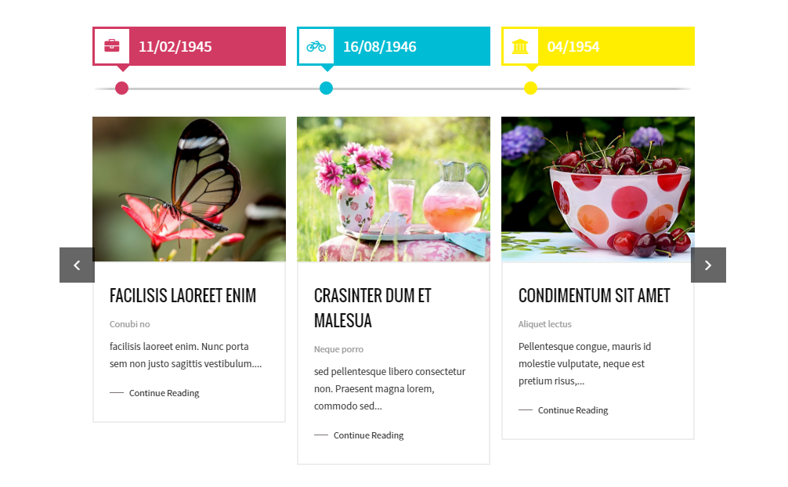
Style 2
[wpex_timeline style="2"]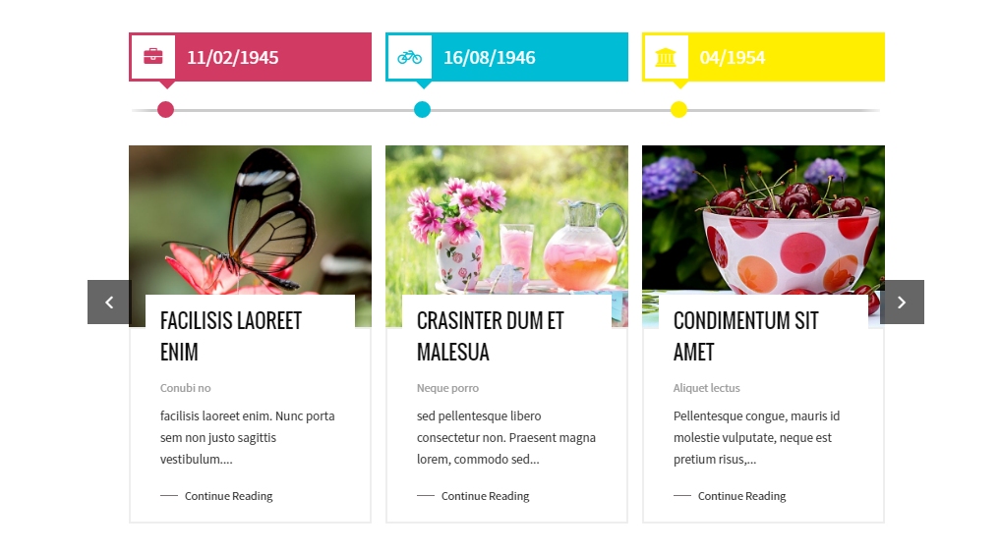
Style 3
[wpex_timeline style="3"]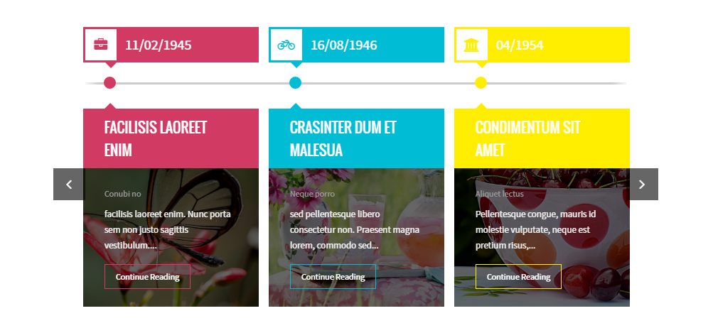
Style 4
[wpex_timeline style="41"]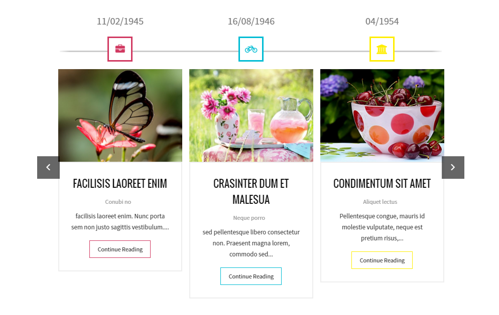
Usage
Simple: go to any place which accepts shortcode, for example Post or Page. Click on the "Timeline button" in the editor or you can use visual composer to config.
Classic editor button
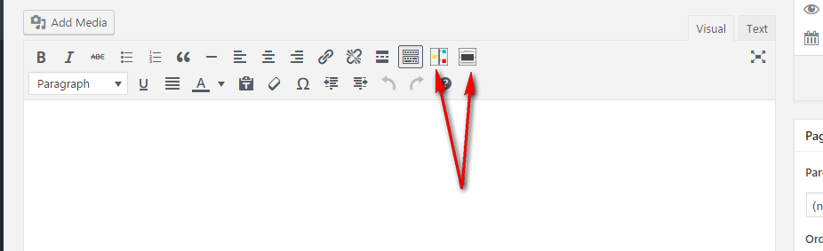You also can use Vissual composer to config
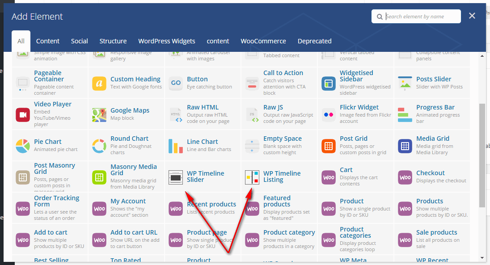Configuration
To go to Timeline Settings page, click on "Timeline" menu item.
General settings
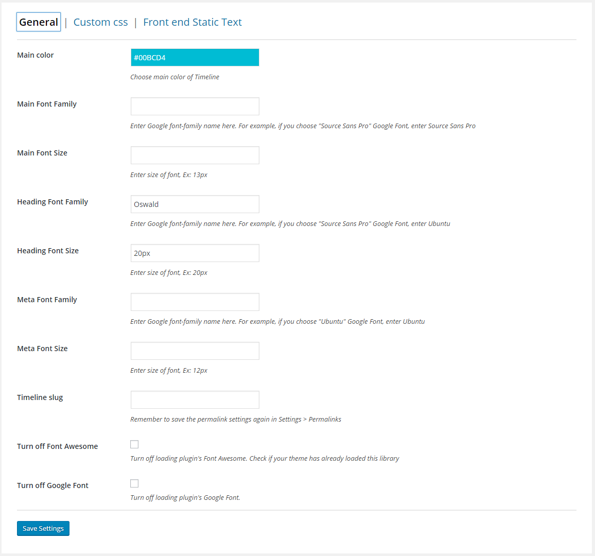Custom css
Enter your custom css here
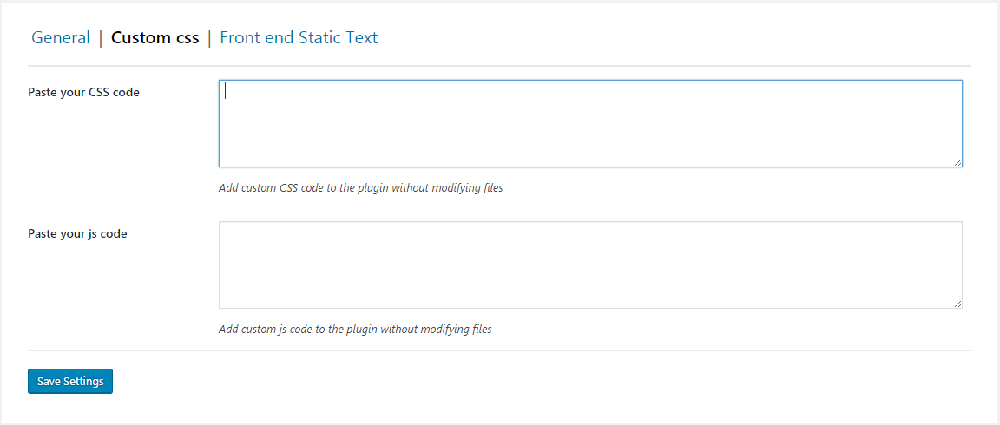Translation
The plugin is translation ready, please follow the steps bellow:
To translate front end, you can go to Timeline Settings page > Front end static text

To translate all static text (front end & back end) you can follow this guide
- 1. Download and install Poedit
- 2. Open POEdit and load "/wp-timeline/language/wp-timeline.po"
- 3. Translate the text and save the file.
- 4. A file named language.mo is created. Rename it with Code Name of your language. For example, wp-timeline-de_DE.mo for German - Deutsche.
All languages codes can be found here:
http://www.gnu.org/software/gettext/manual/gettext.html#Language-Codes
and all countries codes can be found here:
http://www.gnu.org/software/gettext/manual/gettext.html#Country-Codes - 5. (For WordPress 3.x)Open [{wordpress root}/wp_config.php] and find this line define('WPLANG', '');. Change it with your language code, for example define('WPLANG', 'de_DE');
- 5. (For WordPress 4.x) Go to Settings > General and change your site language
Sources and Credits
I've used the following images, icons or other files as listed.
- Free Photos - by Pixabay
- Font Awesome - MIT License
- Custom Meta Boxes - GPL V2 License
Once again, thank you so much for purchasing this plugin. As I said at the beginning, I'd be glad to help you if you have any questions relating to this plugin. No guarantees, but I'll do my best to assist. If you have a more general question relating to the plugin on Codecanyon, you might consider visiting the forums and asking your question in the "Item Discussion" section.
ExThemes